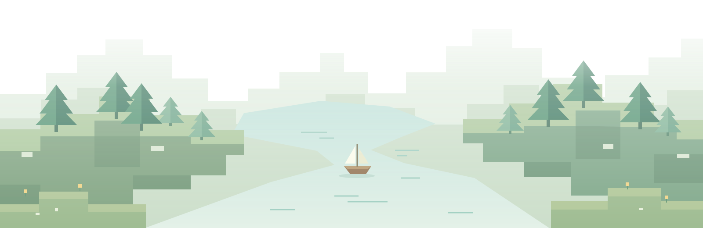

版本各有天地
集中管理游戏实例，切换原版与模组环境，让每个世界都有自己的位置。
BOAT CHRIS CRAFT LAUNCHER
你的 Minecraft Java 版，从这里开始。
安装、管理、联机，把热爱装进一个启动器。
Windows x64 · Alpha 0.2.2 · 238.2 MiB

向下探索MADE FOR YOUR NEXT ADVENTURE
从第一次安装，到下一次相聚。
BCCL
把出发前的准备，安排得井井有条。
原版、Forge、NeoForge、Fabric……按需选择游戏与加载器，安装、管理都在一处完成。
内置 MCTier 3.10.0 联机组件。在同一个启动器里创建或加入房间，和伙伴继续你们的故事。
13 种常驻配色，搭配浅色与深色模式。让 Liquid Glass 界面与你喜欢的颜色一起，成为冒险的起点。
集中管理游戏实例，切换原版与模组环境，让每个世界都有自己的位置。
发现并下载社区资源，为熟悉的世界，添一点新鲜感。
内置 Java 下载器，提供 Oracle 与 Eclipse Temurin 选择，下载后校验文件。
从配色到明暗模式，让每天打开的启动器，也有属于你的个性。
THREE STEPS. ENDLESS POSSIBILITIES.
下载 Windows x64 单文件版，放进你喜欢的文件夹后运行。首次启动会自动准备所需缓存。
一个 EXE，即可出发在启动器中配置账号，选择游戏版本和加载器；按需下载 Java，完成第一次安装。
选择属于你的玩法进入自己的方块世界。想和朋友一起？打开联机页，创建或加入房间，继续你们的故事。
下一段故事，由你书写YOUR WORLD IS WAITING
把准备交给启动器，把时间留给热爱。
下载 Windows 版Alpha 为预览版本，建议先备份重要游戏数据。
单文件 Windows x64 版，自带 .NET 运行时。Java 与游戏内容需要另外安装，可使用启动器内的下载功能。联机组件随程序封装，首次使用会准备本地缓存。
文件大小：249,778,250 字节。
SHA-256
ee3b699b3c4f88e376ea925e707505d901e813ab247061b717abbe992604fc23
BCCL 全称 Boat Chris Craft Launcher，是基于 PCL-CE 开发的 Windows Minecraft Java 版启动器，提供游戏安装、版本与实例管理、资源下载、Java 管理、账号配置及内置联机功能。
本站提供 Windows x64 版本，建议在 Windows 10 / 11 64 位系统上使用。发布包自带 .NET 运行时，不需要另行安装 .NET。Minecraft 运行所需的 Java 需要单独准备，可在启动器的 Java 下载器中获取。联机界面使用 WebView2，若提示缺少该组件，请按提示安装微软官方运行时。
启动器、运行时和内置联机组件封装在同一个文件中。首次打开时会解压必要依赖并创建缓存，准备时间取决于磁盘和系统环境。软件仍会正常写入配置、日志与游戏数据，建议将 EXE 放在独立文件夹里。
可以。下载页提供游戏与加载器安装，以及模组、资源包和整合包等社区资源下载。请确认游戏版本、加载器与模组版本兼容，并在修改已有实例前备份存档。
打开“联机”页面，使用内置 MCTier 创建或加入房间，再按房间内提示进入游戏。联机体验取决于双方网络、防火墙和系统权限。语音、共享与远程控制功能应在参与者知情并同意后使用。
BCCL 是启动与管理工具，不包含 Minecraft 游戏授权。请使用你拥有的正版账号和合法获取的游戏内容。Microsoft 正版登录可能需要先在启动器的“正版登录设置”中填写 OAuth Client ID，具体以启动器中的提示为准。
可以访问 BCCL 源码仓库，查看项目文档与许可，在 Issues 中报告问题。BCCL 基于 PCL / PCL-CE，内置联机来自 MCTier；各组件保留原作者署名并遵循各自许可，MCTier 自有代码遵循其非商业许可。